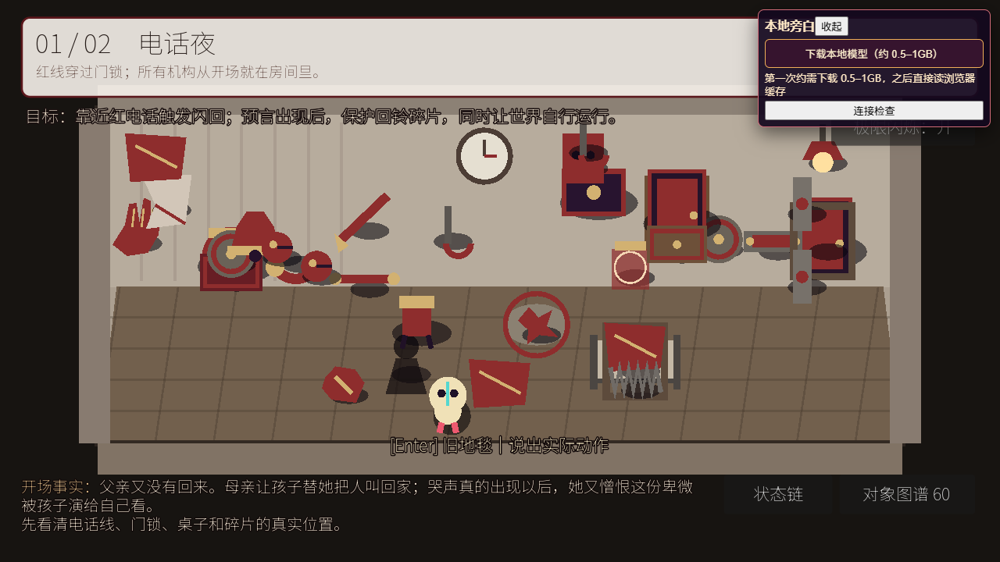
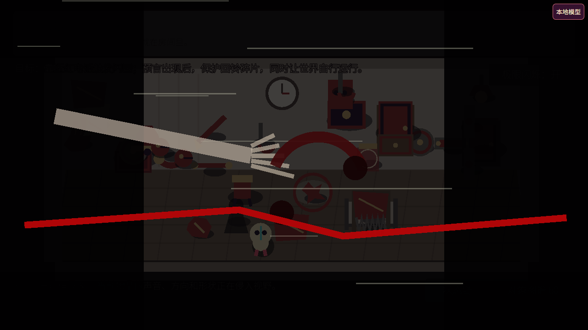
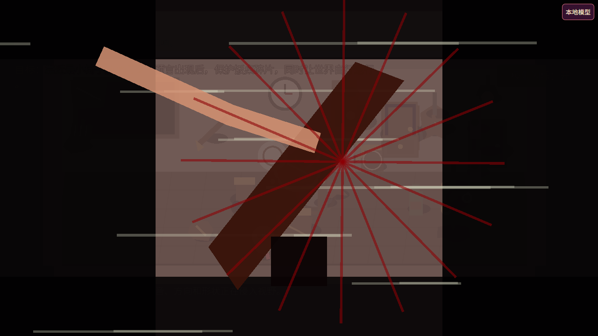
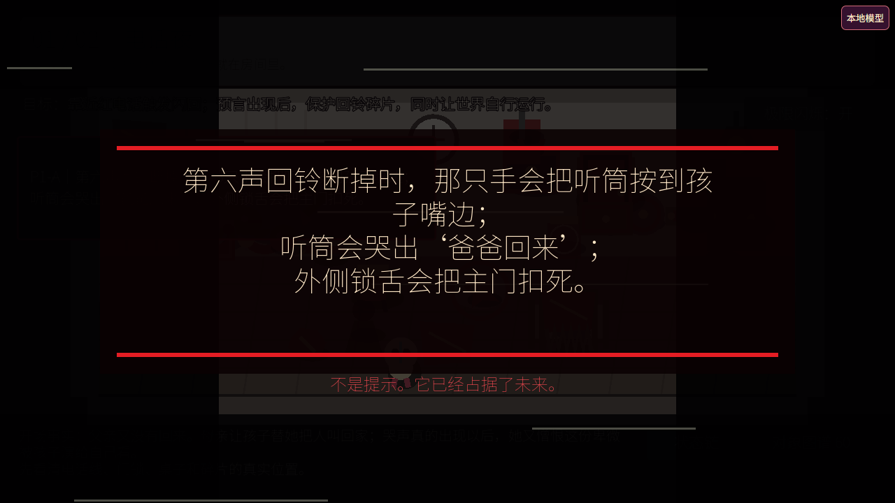

对象独立链
60/60 条链均为 10 步；每一步检查 20 项完整字段。墙面脱落片会在运行时获得自己的十步链。
本页对应当前 Pages 游戏，不再使用上一版十关演示的数据冒充本次结果。




60/60 条链均为 10 步；每一步检查 20 项完整字段。墙面脱落片会在运行时获得自己的十步链。
20 组故事耦合全部展开 10 步；此外，任意两个实际碰撞体靠近时动态写入联合态。
6 条候选预言分别跑过 8 个不同物品状态指纹；判定只读取 endpoint 字段，不读取解法名。
自动测试在四个不同墙面坐标开洞均通过；局部重建保留洞口多边形和脱落片碰撞。
L1 坐标/所有者到 L8 下一场景均可在“状态链”面板查看；高层分支直接保存具体低层输入。
电脑键盘、网页文字输入、手机方向键与“说 / 操作”按钮共用同一状态执行器。
实际浏览器已验证三个桥：自然语言“捡起石块”被约束为“拿石块”；预言只能从候选数组选择；门的 locked 状态可被严格判定为预言首次成立。下载器具备 WebGPU、CPU/WASM、浏览器缓存、单源 12 秒超时和三个组件源。
当前自动化环境会拦截所有外部 CDN，因此无法在这里下载完 0.5–1GB 权重；页面在这种情况下仍由严格规则继续运行，并把具体联网错误显示给访问者。
PROTOTYPE-AUTOTEST: PASS 60×10 object states 20 joint chains 6 prophecies × 8 state routes arbitrary surface holes two FX modes npm test: PASS content / engine / catalogue / prophecy-state / site